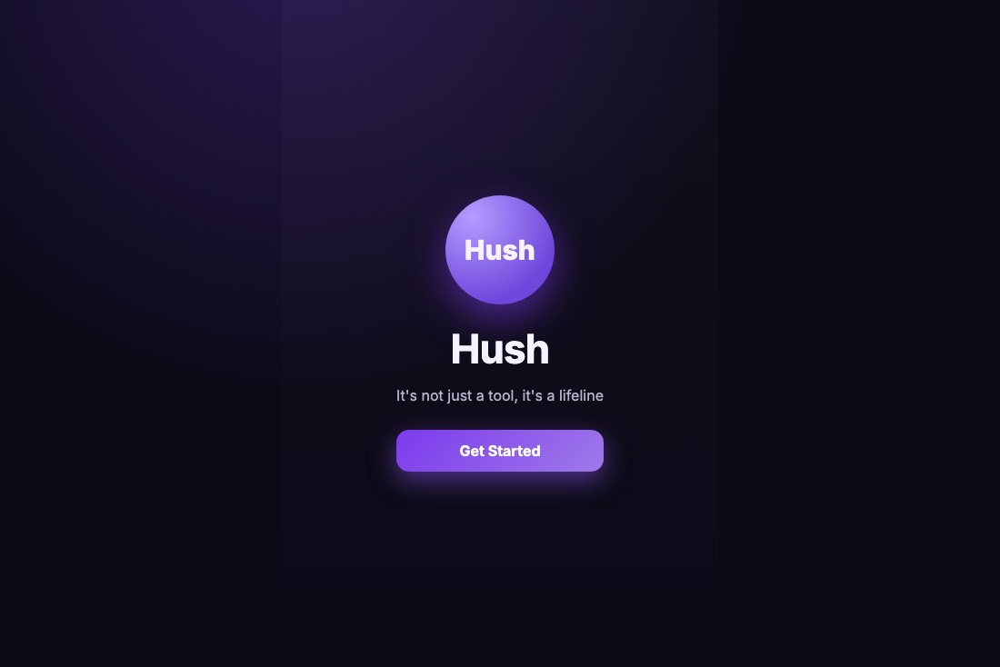

Hush

A mobile-first app for people managing hidden illnesses. You log personal events on a map, track environmental triggers, and watch nearby signals that might explain why today is worse than yesterday. The premise is that "I have no idea what set it off" is more often a data problem than people get told it is.
What it taught me
Designing for a bad day. Every interaction had to survive being used one-handed by someone who feels awful, which quietly killed most of my nicer ideas.